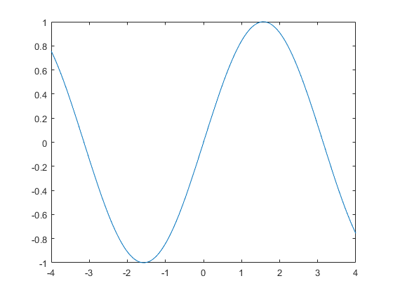
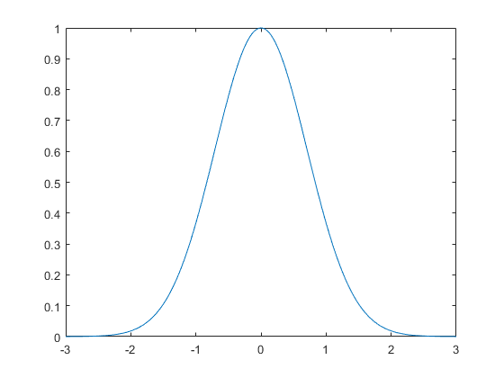
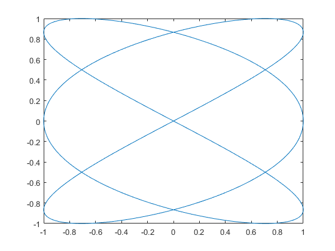
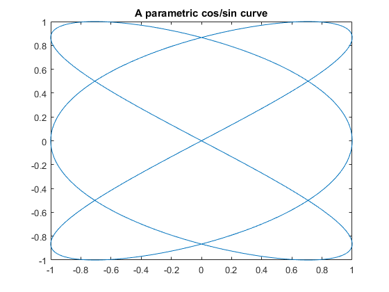
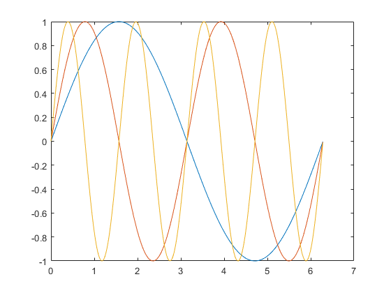
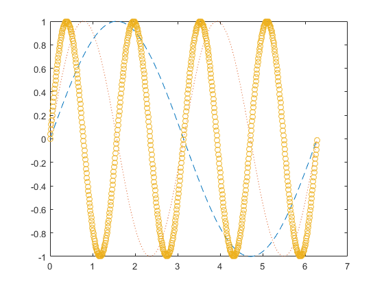
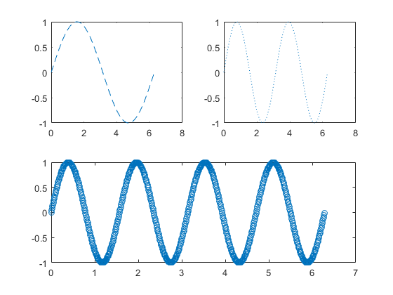

15 Two-Dimensional Graphics
Contents
15.1 Planar plots
x = -4:0.01:4 ;
y = sin(x) ;
plot(x, y) ;

x = -3:.01:3 ;
y = exp(-x.^2) ;
plot(x, y) ;
15.2 Multiple figures
15.3 Graph of a function
fplot(@expnormal, [-3 3])

f = @(x) exp(-x.^2)
fplot(f, [-3 3])
f =
@(x)exp(-x.^2)
15.4 Parametrically defined curves
t = 0:.001:2*pi ;
x = cos(3*t) ;
y = sin(2*t) ;
plot(x, y) ;

15.5 Titles, labels, text in a graph
title('A parametric cos/sin curve')

15.6 Control of axes and scaling
15.7 Multiple plots
x = 0:.01:2*pi;
y1 = sin(x) ;
y2 = sin(2*x) ;
y3 = sin(4*x) ;
plot(x, y1, x, y2, x, y3)

x = (0:.01:2*pi)' ;
y = [sin(x), sin(2*x), sin(4*x)] ;
plot(x, y)
plot(x, y, [0 2*pi], [0 0])

15.8 Line types, marker types, colors
x = 0:.01:2*pi ;
y1 = sin(x) ;
y2 = sin(2*x) ;
y3 = sin(4*x) ;
plot(x,y1, '--', x,y2, ':', x,y3, 'o')

15.9 Subplots and specialized plots
subplot(2,2,1)
plot(x,y1, '--')
subplot(2,2,2)
plot(x,y2, ':')
subplot(2,2,[3 4])
plot(x,y3, 'o')

15.10 Graphics hard copy